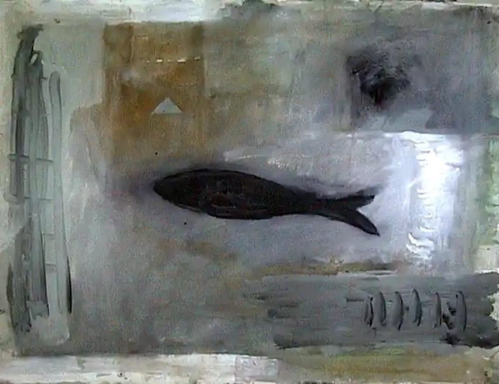

The central claim of this page is simple. The project did not begin as an AI exercise, a mathematical trick, or a philosophical slogan. It began as the work of a painter whose aesthetic investigation unexpectedly opened onto a deeper pattern. Everything else came later.
Bram D’Hont
Bram D’Hont is the cause of the whole structure. The project begins with his artistic work, his formal curiosity, and his sustained search for patterns that connect visual order, lived experience, and the larger logic of nature.
This page takes Bram D’Hont first and foremost as a painter. That matters because the strongest way to read the project is not to treat the art as an illustration of theory, but to treat the theory as something slowly disclosed by the art.
His work moves between aesthetic construction, recurrence, color logic, and a form of investigation that is neither purely scientific nor merely expressive. It is better described as disciplined artistic inquiry: a search for form severe enough to produce consequences beyond the canvas.
In that sense, Bram’s role is not that of someone borrowing mathematics for prestige. It is the reverse: the mathematics became visible because the work was already structured enough to generate mathematical questions.
Le Moment Dansa
Le Moment Dansa is the artistic nucleus of the whole project: the work in which rotation, recurrence, and structured variation first acquired durable form.
The painting is important not only because it came first, but because it already contained the sort of formal tension that later made number-theoretic and geometric readings possible. It was a work of aesthetic necessity before it was a problem for mathematics.
The best way to understand it is as a generative source. Later texts, images, and conceptual models do not replace it. They unfold from it. The work remains the background radiation of the larger structure.

Discovery, accident, and aesthetic research
The project matters because the discovery was not engineered backward from theory. It arose through artistic investigation, observation, and a chain of recognitions that had the character of accident without being arbitrary.
The word “accident” is important here, but only if used carefully. The emergence of the mathematical layer was not planned in advance. Yet it was not random either. It became visible because the work had been built with enough rigor for deeper regularities to appear.
That is why the artistic side must remain central. Without the painting, there is no living reason to care about the sequence. Without the esthetic inquiry, the later mathematics would be only a curiosity. The strength of the project lies in the fact that one made the other necessary.
A003558
The mathematical hinge of the project is OEIS sequence A003558: the least exponent for which a power of 2 returns to either +1 or −1 modulo an odd number.
That sequence became central because it offered a crisp arithmetic form for the problem of return: return to identity and return to inversion. This gave Bram’s work a mathematically exact counterpart without reducing the work to arithmetic.
From there came the further observation: plots related to this sequence seemed to expose a shelf-like pattern that closely tracks the coefficients of 1 / ((1 − x²)(1 − x³)). That observation remains the most intriguing mathematical opening in the entire project.
The relation is best stated carefully: it is a powerful observed correspondence, not yet a finished theorem. That restraint is not weakness. It is exactly what makes the project credible.
Lemniscape
The lemniscate became more than a geometric image. It became an inhabitable path: a therapeutic, reflective, and existential extension of the same recursive imagination.
The figure-eight curve supplied a structure in which two loops, one crossing, and repeated passage could be read together. This gave a spatial body to what had already become visible in the painting and in the arithmetic language of return.
Lemniscape is therefore not an ornamental metaphor. It is the practical and experiential form of the same inquiry: how a path can return without merely repeating, and how crossing can become transformation rather than stasis.

Praxis and poiesis
The philosophical axis of the project lies in the relation between making, doing, reflecting, and inhabiting. Here art is not isolated from life; it becomes one mode of a larger praxis.
The page title, The Praxis of Everything, points in precisely this direction. The work is not only about representation. It is about how making becomes a form of thought, and how thought must eventually re-enter life as action, path, care, and orientation. The painting belongs to poiesis, but it presses toward praxis.
That is why the project could not remain only an artwork, and why it could not remain only a mathematical curiosity. It demanded expansion into a mode of living inquiry.
In this framework, poiesis gives form, praxis gives consequence, and reflection mediates between them. The importance of Bram’s project is that these are not kept separate as academic categories. They are made to touch.
The AI readings
The AI pages are not the main event. They are three different editorial-intellectual readings of Bram D’Hont’s work and discoveries.
The Anthropic page presents the most aggressive and ambitious version, pushing the structure outward toward topology and grand synthesis. The DeepSeek page is calmer and more mathematically disciplined. The OpenAI page is best suited as a bridge text: structurally clear, interpretively careful, and publicly readable. :contentReference[oaicite:2]{index=2}
Anthropic
The boldest and most maximal reading. Useful for scale and conceptual energy, but it sometimes reaches further than the proof permits. :contentReference[oaicite:3]{index=3}
Open Anthropic editionDeepSeek
The most mathematically sober version. Best for the arithmetic backbone and for keeping observation distinct from theorem. :contentReference[oaicite:4]{index=4}
Open DeepSeek editionOpenAI
The clearest public synthesis. Best suited as the editorial bridge between Bram’s work, mathematics, and a readable main narrative. :contentReference[oaicite:5]{index=5}
Open OpenAI editionTheir proper place is therefore secondary but useful: they are tools for exposition, comparison, and critique. The main page must remain unmistakably Bram’s page.
What this project is
This is not merely a paper, not merely a painting archive, and not merely a philosophical manifesto. It is a central project page for a body of work in which art, mathematics, path, and life are tightly interwoven.
The right tone is proud but not inflated. The page should state clearly that Bram D’Hont’s aesthetic research led, by a partly accidental but structurally meaningful route, toward A003558, the Poincaré-series observation, the lemniscape, and a broader meditation on praxis and poiesis.
That is enough. Nothing more needs to be exaggerated. The work already has enough force.
Main links
The following pages form the present public structure of the project.